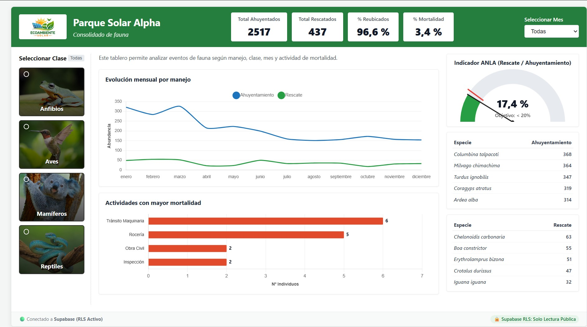

Flujos Automatizados & Consultoría Técnica
Automatización de datos para consultoría ambiental
Optimización de flujos operativos de campo, análisis de biodiversidad y generación de entregables técnicos en tiempo récord.
Servicio 01
•
[+] Obtén flujos que resuelven horas de trabajo manual en un par de minutos
Automatización de Formatos y Anexos de Fauna
Diligenciamiento masivo de plantillas de campo, inserción de fotos, exportación a PDF y consolidación cruzada con catálogo biológico.
Deslizar galería
Servicio 02
•
[+] Visualiza los principales KPIs del proyecto para mejorar la toma de decisiones
Dashboard de Gestión de Fauna
Panel con KPIs de rescate, ahuyentamiento, reubicación y mortalidad, con versión web interactiva.
fauna-dashboard.netlify.app

Servicio 03
•
[+] Actualiza tus reportes mensuales en menos de 5 minutos
Reportes Técnicos Automatizados de Fauna
Limpieza de datos, tablas ecológicas, análisis de abundancia y riqueza, redacción automática y compilación en PDF.
Deslizar galería
¿Listo para automatizar tus flujos de consultoría?
Sin intermediarios ni agencias • Consultoría independiente